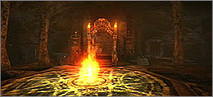

|
2002年5月23日
天堂2003年預告動畫
韓國天堂官方網站放出了新的天堂動畫，當中最後特別提到2003年這個日子，莫非在2003年會有史無前例的大改變？如無意外應該是亞丁城或3D版本的更新。有關動畫可在以下連結下載：
（假如看不到，請安裝Windows
Media Player及MPEG
4的Codec）
http://web.ncsoft.feelamint.com/lng/Lineage_2003.zip
（約13MB）
Lineage II 新宣傳動畫，遊戲動畫及抓圖
Lineage II官方網站更新了宣傳動畫，遊戲動畫及抓圖，大家可以在以下連結下載或觀看：
（假如看不到，請安裝Windows
Media Player及MPEG
4的Codec）
宣傳動畫（約38MB）
 遊戲動畫（約57MB）
新抓圖
第十一章：歐瑞及象牙塔地型及新怪物抓圖
韓國天堂官方網站放出了歐瑞及象牙塔地型及新怪物的抓圖，大家可以到以下連結觀看：
https://bbs.lineage.co.kr/lineage/new_announcement/pre_lin_contents/read.asp?ListNum=16&PageNum=1
補充：香港天堂官方網站亦放上了相同的圖片，大家可以在以下連結觀看：
http://www.lineage.com.hk/lineage/events/article/episode11.htm
香港伺服器5月23日更新內容
轉載自香港天堂官方網站更新公告：
以下為5月23日遊戲更新內容:
1.
修正了使用觀看模式進入競技場時，無法回復魔力的Bug。
2. 無法透過使用「垃圾桶」將寵物項圈刪除。
3.
為了保護居住環境，在血盟小屋附近無法設立座標書籤。而以前這些地區的bookmark將會被刪除。
4.
修正了寵物及迷魅的怪物被變身後，名字出錯的問題。
5. 有關5月17日更新項目之內容第18點未能正常運作，而導致某些道具不能正常掉落到寵物、迷魅或召喚的怪物身上之問題，已經修正。 |